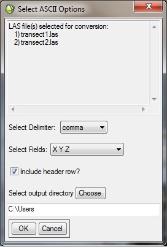

Using "Convert LAS Data to Ascii"
This tool is meant to convert one or more LAS format data files to text (ascii) file format.
Usage:
- Select the input LAS file(s) to convert.
- Select the text file delimiter (comma, semicolon, or tab).
- Select the fields from the LAS format lidar data to be included in the output text file ('X Y Z', 'Time X Y Z Intensity', or 'All available fields’)
- If the “Include header row?” box is checked, then the first row of the output text file will contain field names separated by the chosen delimiter.
- Select the output directory. The output file(s) will be saved in the new directory with the same name as the input files. The LAS file extension will be changed to TXT.
Back to LidarTools home page.
Notes:
- ‘All available fields’ includes the following items from the LAS Version 1.1 Specification: X (X_Easting), Y (Y_Northing), Z (Z_Elevation), Intensity (Intensity), Return Number (nReturn), Classification (Class), Scan Angle Rank (Angle), User Data (User), Point Source ID (Source), and GPS Time (GPS_Time)
- If the LiDAR data have been processed through the BCAL height filtering algorithm, these results will be stored in the Classification and Point Source ID fields. The Classification field will distinguish ground and vegetation returns (0 = never classified, 1 = unclassified (errors), 2 = ground and 3 = vegetation). The Point Source ID field will contain the vegetation heights (usually in cm). Errors and unclassified points will have a height value of 65535.
Comments?
• Idaho State University • Boise Center Aerospace Laboratory • 322 E. Front Street #240 • Boise, Idaho • 83702 •